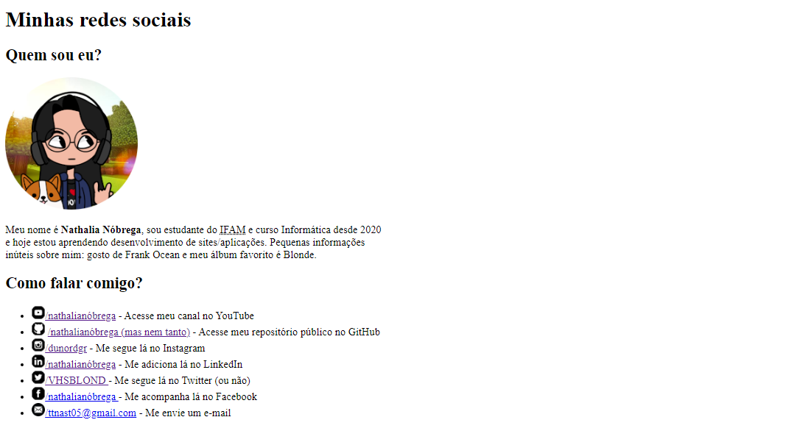

Throughout my career, I've always wanted to screenshot these little things that I thought were huge accomplishments, with the idea of "documenting life checkpoints". For example, take this screenshot from November 14th, 2021, of one of my first HTML pages:
 And the first file that I commited to my GitHub account, also in November, 2021: You may or may not have noticed that I am a huge Frank Ocean fan...Throughout my career, I've always wanted to screenshot these little things that I thought were huge accomplishments. And also with the idea of "documenting life checkpoints". For example, take this screenshot from November 14th, 2021, of one of my first HTML pages:
And the first file that I commited to my GitHub account: You may or may not have noticed that I am a huge Frank Ocean fan...Throughout my career, I've always wanted to screenshot these little things that I thought were huge accomplishments. And also with the idea of "documenting life checkpoints". For example, take this screenshot from November 14th, 2021, of one of my first HTML pages:
And the first file that I commited to my GitHub account: You may or may not have noticed that I am a huge Frank Ocean fan...Throughout my career, I've always wanted to screenshot these little things that I thought were huge accomplishments. And also with the idea of "documenting life checkpoints". For example, take this screenshot from November 14th, 2021, of one of my first HTML pages:
And the first file that I commited to my GitHub account: You may or may not have noticed that I am a huge Frank Ocean fan...